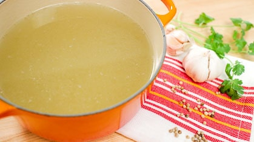

Thai-Style Chicken Stock

Description
An authentic recipe for thai-style chicken stock.
Ingredients
- 1 kg chicken bones, remove any big chunks of fat you can see
- 3 L water
- 5 cloves garlic, smashed
- 4 inch section daikon, peeled, or use 1 onion instead (or use both like I did!)
- 2-3 cilantro roots, or about 8 stems
- 0.25 tsp white peppercorns, crushed just until broken
Steps
- Add bones to a big pot and cover with the water
- Bring to a simmer over high heat, then once bubbling, reduce the heat to maintain a gentle simmer.
- Simmer bones for about 45 minutes.
- Skim off scum, foam and fat that has floated to the top.
- Add all the remaining ingredients then simmer for another hour.
- Fish out all the bones and aromatics with a wire skimmer or strain the stock through a colander. The stock is now ready to use!